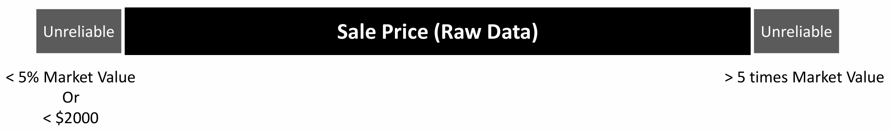

The Path to Parity: Optimizing Residential Sale Price Prediction for Fair Taxation
Lumberjack Consultancy
Chapter 1. The Challenge: Rethinking How Philadelphia Values Its Homes
The Problem
Every year, thousands of Philadelphians buy or sell homes, and every transaction tells a story about how people value location, convenience, and opportunity.
Yet the city’s current Automated Valuation Model doesn’t always capture these stories. Some neighborhoods are undervalued, while others bear unfairly high assessments.
TipWhat we are trying to explore?
- Price Gap: Why do two homes with similar size and design sell for very different prices in Philadelphia?
- Spatial Drivers: Which neighborhood, accessibility, and socioeconomic factors drive these differences?
- Fair Valuation: How can understanding them help the city create a fairer, smarter system for property tax assessment?
Data Sources
🏠Property sales
(n = 34,559 2023-2024)
- Livable Area
- Bedrooms Counts
- Bathrooms Counts
- House Age
- Interior Condition
- Quality Grade
- Fireplaces
- Garage Spaces
- Central Air
- Market Value
- Sale Price
🔢Census ACS
(n = 2023)
- Median Income
- Education Level
- Unemployment Rate
🏛OpenDataPhilly
- Transit
- Parks and Recreation center
- Hospitals
- Crime(2023)
- Point of Interest
Chapter 2. The Approach: From Simple Models to Smarter Predictions
Where Are Expensive Homes?

- Residential sale prices exhibited clear signs of spatial clustering.
- highest-priced properties: Center City core, University City.
- Middle & Lower-Price tiers : North Philadelphia, West Philadelphia (outside the university sphere), and South Philadelphia.
- Account for the specific “micro-market” in which a property is situated.
Why Are They Expensive?

Highlight

Principle：Retain all information that the data tells us (including outliers) rather than deleting it.
Objective：Ensure equity.
Relationship Formula:
Sale Price = -9189.29 + 1.03*Market valueApproach: Unreliable sale price(low weight)~ Reliable sale price(high weight)
Model Building and Validation
Model Performance Improves with Each Layer
| Model | CV RMSE (log) | R² | RMSE |
|---|---|---|---|
| Structural Only | 0.5497 | 0.5235 | 221675.8 |
| + Census | 0.4519 | 0.6779 | 178383.4 |
| + Spatial | 0.3994 | 0.7486 | 132547.4 |
| + Interactions/FE | 0.389 | 0.7611 | 124417.4 |
- R² = 0.76 => The model explains 76% of the variation in residential sale prices.
- RMSE = 124,417.4 => The average error between the model’s predicted sale price and the actual sale price is approximately \(\$124,417.4\).
ImportantImportant
- For K-fold cross-validation, we use the entire dataset with replaced outliers for training to maintain consistency with the model derivation process. For the final test, however, we use a purified set that excludes all handled data, ensuring a reliable performance evaluation on genuine, trustworthy data.
Chapter 3. The Insight: Interpretation and Reality
Key Factors
- Livable Area
- Comparable Sales
- Interior Condition
- Zip Code
Identifying the Hardest-to-Predict Neighborhoods

Interpretation
- Underestimate zip code: 19130, 19123, 19104, 19144…
Overestimate zip code: 19102, 19107, 19116, 19154… - Market is moving faster than the city’s valuation system can keep up.
Recommendations and Limitations
- Correct the assessed values in low-income communities that have been systematically overestimated.
- Routinely incorporate the effective spatial features—particularly surrounding transaction prices and neighborhood fixed effects.
- Extreme high values almost exclusively stem from corporate transactions and require manual review for outliers.
ImportantLimitations: Algorithmic Fairness
- Spatial Coverage Bias and Data Quality Bias
- Feature Omission Bias and Spatial Dependence Bias